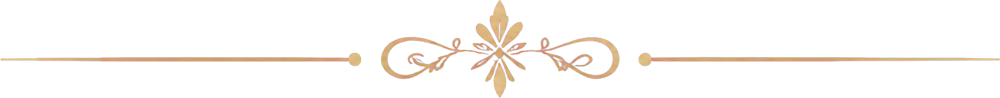
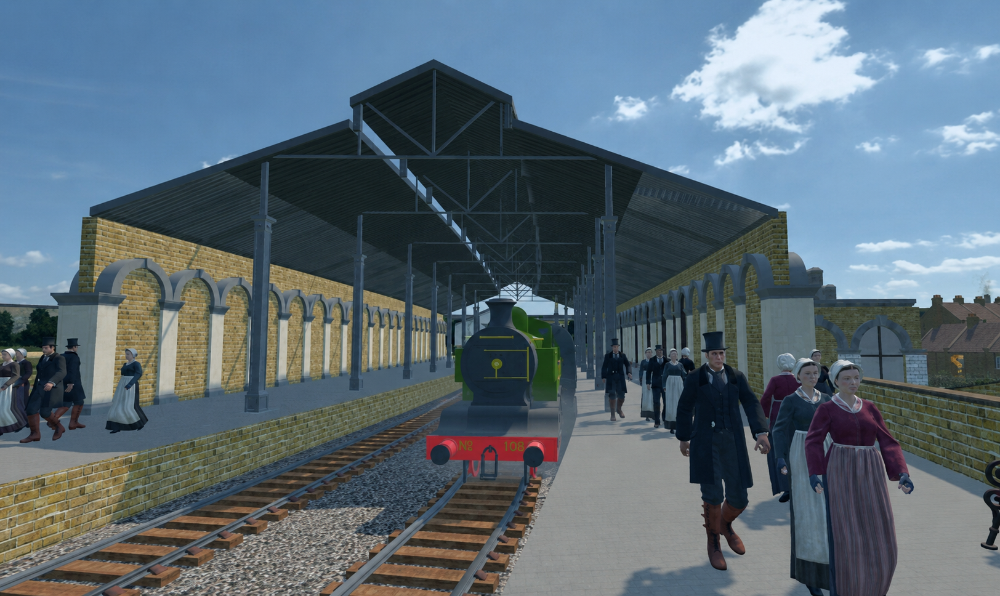

Before AD 43

Connecting Northamptonshire’s Past
with Today’s Community.

★ Featured Experience
Travel back in time and explore the streets of Victorian Northampton through an immersive digital walkthrough created by Explorable Games.
Journey through Northamptonshire’s story, from its earliest beginnings to the county we know today.
Before AD 43

AD 43–410

410–1066

1066–1485
.png)
1485–1714

1714–1901

1901–Present

★ Featured Author
Local history writer Jack Preston brings Northamptonshire’s past vividly to life through engaging stories about the county’s people, places and remarkable moments.
Heritage
Open Days
★ Featured What’s On
Each September, Heritage Open Days offers free opportunities to explore Northamptonshire’s historic buildings, exhibitions, guided walks and rarely seen collections. Check individual listings for booking details and last-minute changes.
Discover what is happening around Northamptonshire.
Together we can celebrate, explore and preserve our county’s heritage.
Events, talks, projects, open days, local groups, questions, new publications and more are shared through the Northants History Network Facebook community.